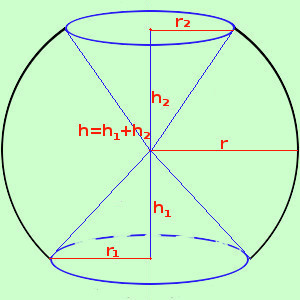
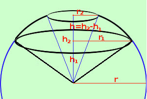

|
 Occorre per prima cosa, per i solidi, aver sempre bene chiara la rappresentazione spaziale della figura: consideriamo il caso a fianco In questo caso l'area e' data dalla superficie della zona sferica piu' le aree delle superfici dei due coni, quindi As settore sferico = As fascia + As cono 1 + As cono 2 As settore sferico = π r (h1+h2) + π r1 apotema1 + + π r2 apotema2 e siccome l'apotema dei coni vale r avremo As settore sferico = π r (h1+h2) + π r1 r + + π r2 r = π r (h1+h2 + r1 + r2) e poiche' vale h = h1 + h2 As settore sferico = π r (h + r1 + r2)  Tale formula vale in generale, ricordando pero' che, nei casi come quello qui a fianco raffigurato, si tratta sempre della somma delle aree di una zona e di due coni, ma devi fare h = h2 - h1 poiche' h e' l'altezza del segmento sferico a due basi cioe' della zona sferica (in figura h e' il segmento compreso fra r1 ed r2) Come vedi e' essenziale avere ben chiara la figura per poter decidere se fare la somma o la differenza |